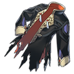

추천 광추
섬뜩한 밤
에너지 회복효율 · 추가 치유 · 공격력
효과 자세히
중첩 1에서 에너지 회복효율이 12% 증가합니다. 아군이 필살기를 쓰면 HP 비율이 가장 낮은 아군을 치유하고, 곽향이 치유한 아군의 공격력은 2턴 동안 최대 12%까지 증가합니다.
수술 후의 대화
곽향의 필살기 회전을 앞당깁니다.
효과 자세히
에너지 회복효율이 중첩 1에서 8%, 중첩 5에서 16% 증가합니다. 필살기로 아군 에너지를 보태고 양명을 자주 갱신할 때 사용하세요.
같은 심정
전투 스킬을 쓸 때 파티 에너지를 회복합니다.
효과 자세히
중첩 5에서 치유량이 20% 증가하고, 전투 스킬을 쓰면 모든 아군이 에너지 4pt를 회복합니다. 전투 스킬 포인트에 여유가 있는 파티에서 활용하기 쉽습니다.
등가교환
에너지가 부족한 아군 한 명을 지원합니다.
효과 자세히
곽향의 턴 시작 시, 에너지가 50% 미만인 다른 아군 한 명을 무작위로 골라 중첩 5에서 에너지 16pt를 회복합니다. 곽향의 행동이 잦을수록 발동 기회가 늘어납니다.
내일의 내일이 올 때까지
치유량과 HP가 충분한 아군의 피해를 높입니다.
효과 자세히
중첩 5에서 곽향의 치유량이 24% 증가하고, 현재 HP가 50% 이상인 아군은 가하는 피해가 20% 증가합니다. 아군의 HP를 안정적으로 유지할 수 있는 파티에서 고려하세요.
추천 유물
태양과 번개의 여전사 4 · 부러진 용골 2
- 머리
 주옵션HP부옵션속도 · 효과 저항 30%까지 · HP% · 방어력%
주옵션HP부옵션속도 · 효과 저항 30%까지 · HP% · 방어력% - 손
 주옵션공격력부옵션속도 · 효과 저항 30%까지 · HP% · 방어력%
주옵션공격력부옵션속도 · 효과 저항 30%까지 · HP% · 방어력% - 몸통
 주옵션치유량 보너스부옵션속도 · 효과 저항 30%까지 · HP% · 방어력%
주옵션치유량 보너스부옵션속도 · 효과 저항 30%까지 · HP% · 방어력% - 다리
 주옵션속도부옵션효과 저항 30%까지 · HP% · 방어력%
주옵션속도부옵션효과 저항 30%까지 · HP% · 방어력% - 구체
 주옵션HP%부옵션속도 · 효과 저항 30%까지 · 방어력%
주옵션HP%부옵션속도 · 효과 저항 30%까지 · 방어력% - 매듭
 주옵션에너지 회복효율부옵션속도 · 효과 저항 30%까지 · HP% · 방어력%
주옵션에너지 회복효율부옵션속도 · 효과 저항 30%까지 · HP% · 방어력%
이 조합을 추천하는 이유
여전사 4세트는 다른 아군을 치유하면 곽향의 속도와 팀 치명타 피해를 높입니다. 부러진 용골은 효과 저항 30% 이상에서 팀 치명타 피해를 더합니다.
가상공간을 누비는 메신저 2 + 흔적을 남기지 않은 과객 2 · 불로인의 선주 2
- 머리
 주옵션HP부옵션속도 · HP% · 효과 저항 · 방어력%
주옵션HP부옵션속도 · HP% · 효과 저항 · 방어력% - 손
 주옵션공격력부옵션속도 · HP% · 효과 저항 · 방어력%
주옵션공격력부옵션속도 · HP% · 효과 저항 · 방어력% - 몸통

주옵션치유량 보너스부옵션속도 · HP% · 효과 저항 · 방어력% - 다리
 주옵션속도부옵션HP% · 효과 저항 · 방어력%
주옵션속도부옵션HP% · 효과 저항 · 방어력% - 구체
 주옵션HP%부옵션속도 · 효과 저항 · 방어력%
주옵션HP%부옵션속도 · 효과 저항 · 방어력% - 매듭
 주옵션에너지 회복효율부옵션속도 · HP% · 효과 저항 · 방어력%
주옵션에너지 회복효율부옵션속도 · HP% · 효과 저항 · 방어력%
이 조합을 추천하는 이유
메신저와 과객 2세트씩으로 속도와 치유량을 챙기세요. 불로인의 선주는 곽향의 HP를 높이고, 속도 120 이상에서 팀 공격력을 8% 높입니다.
이 정도면 잘 키웠다
134는 행동 게이지 조정 효과 없이 혼돈의 기억 첫 사이클에 2회 행동을 노리는 시작점입니다. 143과 160은 파티 행동 순서에 맞춰 고려하세요.
레벨 80 기준으로 치유량과 생존을 함께 챙기는 참고 범위입니다.
5성 +15 연결 매듭으로 약 19.4%를 얻습니다. 광추 효과에 따라 더 높아집니다.
부러진 용골 2세트의 치명타 피해 효과 발동 조건입니다.
목표 스탯을 볼 때
레벨 80 곽향과 광추, +15 유물을 기준으로 캐릭터 상세에서 확인하세요. 전투 중 성혼 1과 유물의 조건부 속도는 파티 행동 순서를 맞출 때 따로 계산하세요. 필살기 주기는 광추 중첩, 전투 스킬 사용 횟수, 피격과 특성 발동에 따라 달라집니다.
성혼과 추천 돌파
명함(E0)부터 치유·디버프 해제와 필살기 지원을 모두 쓸 수 있습니다. 추가 투자로는 양명 유지와 팀 속도를 개선하는 성혼 1을 우선 고려하세요. 광추는 보유한 4성으로 시작해도 됩니다.
1양명 +1턴 · 팀 속도 +12%추천
특성의 양명이 1턴 더 지속됩니다. 양명 중 곽향의 치유량이 20%, 모든 아군의 속도가 12% 증가합니다. 양명 유지에 드는 전투 스킬 포인트를 줄이기 쉽습니다.
2아군 전투 불능 방지
양명 중 치명적인 피해를 받은 아군의 전투 불능을 막고 최대 HP의 50%를 회복합니다. 발동 시 양명이 1턴 줄어들며, 전투당 최대 2회 발동합니다.
3필살기·특성 레벨 +2
필살기와 특성 레벨이 각각 2 증가합니다. 두 스킬의 레벨 상한은 15입니다.
4HP가 낮은 아군 추가 치유
전투 스킬과 특성으로 치유할 때 대상의 현재 HP가 낮을수록 곽향이 제공하는 치유량이 최대 80% 증가합니다.
5전투 스킬 +2 · 일반 공격 +1
전투 스킬 레벨이 2, 일반 공격 레벨이 1 증가합니다. 레벨 상한은 각각 15와 10입니다.
6치유받은 아군의 피해 +50%
곽향이 아군을 치유하면 해당 아군이 가하는 피해가 2턴 동안 50% 증가합니다.
추천 파티


기본 운영과 행적
전투 역할
곽향은 선주 「나부」의 시왕사 견습 판관이자 5성 바람·풍요 캐릭터입니다. 전투 스킬은 대상의 디버프를 해제하고 대상과 인접한 아군을 치유합니다. 필살기는 곽향을 제외한 동료들의 에너지를 회복시키고 공격력을 높입니다.
- 강화 상태에서는 전투 스킬과 필살기 모두 양명을 갱신합니다. 양명이 유지되는 동안 아군 차례가 시작되거나 아군이 필살기를 쓰면 특성 회복이 발동합니다.
- 당장 치료하거나 해제할 디버프가 없고 양명이 유지될 때는 일반 공격으로 전투 스킬 포인트를 수급하세요.
광추와 유물
- 광추는 전용 「섬뜩한 밤」 또는 에너지 회복효율을 주는 4성 「수술 후의 대화」를 고려하세요.
- 터널 유물은 치명타 피해를 활용하는 파티에서 「태양과 번개의 여전사」 4세트, 속도와 치유량을 함께 챙길 때는 「가상공간을 누비는 메신저」와 「흔적을 남기지 않은 과객」 각 2세트로 시작할 수 있습니다.
- 차원 장신구는 공격력이 중요한 지속 피해 파티에서 「불로인의 선주」 2세트를 고려하세요. 장착자 속도가 120 이상일 때 아군 공격력이 증가합니다.
- 주옵션은 몸통 치유량 보너스, 신발 속도, 차원 구체 HP%, 연결 매듭 에너지 회복효율을 권장합니다.
행적과 부옵션
필살기를 우선 강화하고 전투 스킬과 특성을 함께 올리세요. 부옵션은 속도와 HP%부터 챙기고 생존이 더 필요하면 방어력%와 효과 저항을 보강하세요.
아하 속도 계산기 →기준과 출처 · 2026-11-24
4.2 정련된 새 빛 강화 상태 및 Prydwen 4.2 빌드 분석 기반